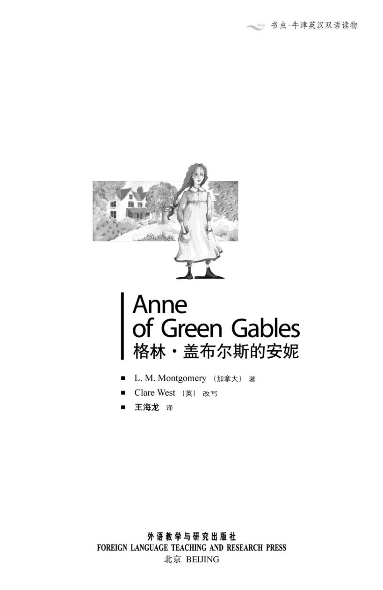
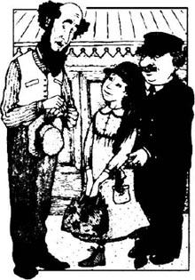
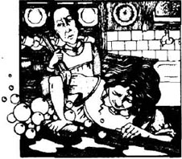
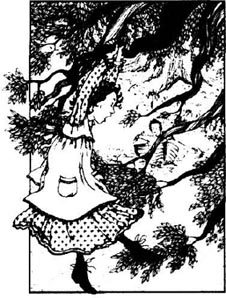
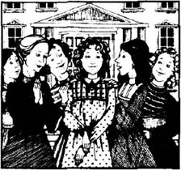
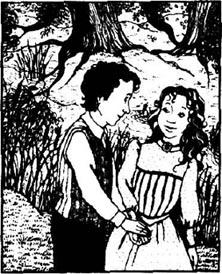

扉页

版权页
京权图字 01-97-0343
Originally published by Oxford University Press, Great Clarendon Street, Oxford. © 1995
This edition is licensed for sale in the People's Republic of China only and not for export therefrom.
'Oxford' is a registered trademark of Oxford University Press.
只限中华人民共和国境内销售，不包括香港特别行政区、澳门特别行政区及台湾省。不得出口。
图书在版编目（CIP）数据
格林-盖布尔斯的安妮：英汉对照／（加拿大）蒙哥马利（Montgomery, L. M.）著；（英）韦斯特（West, C.）改写；王海龙译．—北京：外语教学与研究出版社，1998.6（2014.3 重印）
（书虫·牛津英汉双语读物）
ISBN 978-7-5600-1409-8
Ⅰ．格… Ⅱ．①蒙…②韦…③王… Ⅲ．英语—对照读物，文学—英、汉 Ⅳ．H319.4：I
中国版本图书馆CIP数据核字（1998）第07717号
出版人： 蔡剑峰
责任编辑：余 军
封面设计：李 萌
出版发行：外语教学与研究出版社
社 址：北京市西三环北路19号（100089）
网 址：http://www.fltrp.com
版 次：1998年6月第1版
书 号：ISBN 978-7-5600-1409-8
* * *
凡侵权、盗版书籍线索，请联系我社法律事务部
举报电话：（010）88817519 电子邮箱：banquan@fltrp.com
法律顾问：立方律师事务所 刘旭东律师
中咨律师事务所 殷 斌律师
简介
简介
“胡萝卜！胡萝卜！”吉尔伯特·布莱思一边轻声叫着，一边从课桌后伸出手来拽安妮的红辫子梢。安妮从座位上跳起来叫道：“讨厌鬼！我恨你！”随后她用课本重重地打了他脑袋一下。
自从安妮·雪利住进卡斯伯特家以后，埃文利村的生活变得不再死气沉沉。他们本想收养一个男孩来帮忙料理格林-盖布尔斯的农活，可他们却得到了安妮——一个长有红发、雀斑且叽叽喳喳有说不完的话的女孩。她是个富于爱心的孩子，但她的麻烦却总是不断！先是林德太太的来访，然后是给教区牧师妻子的蛋糕，还有她的红头发……
经过在学校的争吵，她还会理睬吉尔伯特·布莱思吗？
露西·莫德·蒙哥马利1874年出生于加拿大，l942年去世。她幼时与祖父母居住在爱德华王子岛上一座破旧的农舍里。她的《格林-盖布尔斯的安妮》在全世界受到了欢迎，她还写了许多关于安妮·雪利的故事。
目录
1 A surprise for the Cuthberts
1
A surprise for the Cuthberts
Matthew Cuthbert lived with his sister Marilla on their farm on Prince Edward Island in Canada. Their farmhouse, Green Gables, was just outside the little village of Avonlea. Matthew was nearly sixty and had a long brown beard. His sister was five years younger. They were both tall and thin, with dark hair. Everybody in Avonlea knew that the Cuthberts were quiet people who worked very hard on their farm.
One afternoon Matthew drove the horse and cart to the station. 'Has the five-thirty train arrived yet?' he asked the station-master.
'Yes,' the man replied. 'And there's a passenger who's waiting for you. A little girl.'
'A little girl?' asked Matthew. 'But I've come for a boy! The children's home is sending us one of their orphan boys. We're going to adopt him, you see, and he's going to help me with the farm work.'
'Well, perhaps the children's home didn't have any boys, so they sent you a girl,' answered the stationmaster carelessly. 'Here she is.'
Matthew turned shyly to speak to the child. She was about eleven, with long red hair in two plaits. Her face was small, white and thin, with a lot of freckles, and she had large grey-green eyes. She was wearing an old brown hat and a dress which was too small for her.
'Are you Mr Cuthbert of Green Gables?' she asked excitedly in a high, sweet voice. 'I'm very happy to come and live with you, and belong to you. I've never belonged to anyone, you see. The people at the children's home were very kind, but it's not very exciting to live in a place like that, is it?'
Matthew felt sorry for the child. How could he tell her that it was all a mistake? But he couldn't just leave her at the station. He decided to take her home with him. Marilla could explain the mistake to her.
He was surprised that he enjoyed the journey home. He was a quiet, shy man, and he didn't like talking himself. But today, he only had to listen, because the little girl talked and talked and talked. She told him all about herself while they drove along.
'My parents died when I was a baby, you know, and for the last three years I've had to work for my food. I've lived with three different families and looked after their children. So I've always been poor, and I haven't got any nice dresses! But I just imagine that I'm wearing the most beautiful blue dress, and a big hat with flowers on, and blue shoes, and then I'm happy! Do you imagine things sometimes.'
'Well, I... I... not often,' said Matthew.
They were now driving past some very old apple trees next to the road. The trees were full of sweet-smelling, snowy-white flowers. The little girl looked at them.
'Aren't the trees beautiful?' she said happily. 'But am I talking too much? Please tell me. I can stop if necessary, you know.'
Matthew smiled at her. 'You go on talking,' he answered. 'I like listening to you.'
When they arrived at Green Gables, Marilla came to the door to meet them. But when she saw the little girl, she cried in surprise, 'Matthew, who's that? Where's the boy?'
'The children's home has made a mistake,' he said unhappily, 'and sent a girl, not a boy.'
The child was listening carefully. Suddenly she put her head in her hands and began to cry.
'You—you don't want me!' she sobbed. 'Oh-oh! You don't want me because I'm not a boy!'
'Now, now, don't cry,' said Marilla kindly.
'Don't you understand? Oh! This is the worst thing that's happened to me in all my life!'
'Well, you can stay here, just for tonight,' said Marilla. 'Now, what's your name?'
The child stopped crying. 'Will you please call me Cordelia?' she asked.
'Call you Cordelia? Is that your name?'
'Well, no, it isn't, but it's a very beautiful name, isn't it? I like to imagine my name is Cordelia, because my real name is Anne Shirley—and that's not a very interesting name, is it?'
Marilla shook her head. 'The child has too much imagination,' she thought.
Later, when Anne was in bed, Marilla said to her brother, 'She must go back to the children's home tomorrow.'
'Marilla, don't you think...' began Matthew. 'she's a nice little thing, you know.'
'Matthew Cuthbert, are you telling me that you want to keep her?' asked Marilla crossly.
Matthew looked uncomfortable. 'Well, she's clever, and interesting, and—'
'But we don't need a girl!'
'But perhaps she needs us,' Matthew replied, surprisingly quickly for him. 'She's had a very unhappy life up to now, Marilla. She can help you in the house. I can get a boy from the village to help me on the farm. What do you think?'
Marilla thought for a long time. 'All right,' she said in the end, 'I agree. The poor child can stay. I'll look after her.'
Matthew smiled happily. 'Be as good and kind to her as you can, Marilla. I think she needs a lot of love.'
adopt vt. take (sb.) into one's family as a relation, esp. as a son or daughter, with legal guardianship 收养（某人）为养子或养女。
plait vt. weave or twist (three or more lengths of hair, straw, etc) under and over one another into one rope—like length 编（头发）成辫，编（草）为绳。
belong v. belong to, be a member of, be connected with 为……之一员，已加入。
journey n. a trip from one place to another, esp. over a long distance. 旅行，旅程。
sob v. draw in the breath sharply and irregulary from sorrow or plain, esp while crying. 呜咽，啜泣。
mistake n. something that you do or say wrongly. 错误，过失。
shake v. move quickly, from side to side, up and down, etc. 摇。
crossly adv. easily or quickly showing anger. 脾气坏地，易怒地。
1 卡斯伯特兄妹俩大吃一惊
1 卡斯伯特兄妹俩大吃一惊

马修·卡斯伯特和妹妹玛丽拉住在加拿大爱德华王子岛上他们的农场里。他们的农舍——格林-盖布尔斯，就在埃文利小村外。马修年近六旬，留着褐色的长胡子。妹妹玛丽拉比他小五岁。他俩身材瘦高，长着深色的头发。埃文利村的每一个人都知道，卡斯伯特兄妹是默默无闻、勤勤恳恳的庄户人。
一天下午，马修驾着马车来到火车站。“五点半的火车到了吗？”他向站长询问道。
“已经到了，”站长回答。“有一位乘客正在等您，是一个小姑娘。”
“小姑娘？”马修问道，“但我是来接一个小男孩！孤儿院给我们送来一个孤儿，我们准备收养他。你看，我还指望他帮忙干农活呢。”
“也许孤儿院没有男孩子，所以他们给你送来一个小姑娘，”站长漫不经心地答道，“她来了。”
马修讪讪地转过身去面对那孩子。女孩大约十一岁，梳着两条粗粗的红色发辫，长满雀斑的小脸又瘦又白，有一双灰绿色的大眼睛。她戴着一顶褐色的旧帽子，衣服已小得不合身了。
“您是格林-盖布尔斯的卡斯伯特先生吗？”她问道，嗓音清晰甜美。“我很高兴能来和你们生活在一起，成为您家的一员。您看，我还从来没有真正作过哪家的成员呢。孤儿院的人都很好，但住在那种地方一点也不好玩，不是吗？”
马修很同情这孩子。他怎么能告诉她这一切都搞错了？他总不能把女孩一个人留在火车站。他决定先把孩子带回家，让玛丽拉向小姑娘解释。
让马修感到吃惊的是，在回家的路上他感觉非常愉快。他是个沉默、腼腆、少言寡语的人。但今天，他只要听就足够了，因为这小姑娘不停地说呀，说呀，说呀。一路上她向马修讲述关于自己的一切。
“爸爸妈妈在我还很小的时候就去世了。您知道吗，过去这三年我不得不自己挣钱养活自己。我曾在三个家庭里照看过孩子。我总是很穷，一件漂亮衣服也没有。我总是想象自己正穿着最漂亮的蓝衣服，戴一顶插满花的大帽子，还有蓝色的鞋子，那时我多高兴啊！您也经常幻想吗？”
“这，我……我……偶尔。”马修答道。
这时马车经过路边的一排老苹果树。树上开满了雪白而芬芳的花朵。小女孩欣赏着。
“这些树多美呀！”她感叹道。“可我是不是说得太多了？如果是，请您告诉我。您知道，我会停止的。”
马修冲她笑笑答道：“你继续说吧，我喜欢听。”
当他们到格林-盖布尔斯的时候，玛丽拉到门口迎接他们。但当她看见小女孩时，她惊讶地叫道：“马修，她是谁？男孩在哪儿？”
“孤儿院弄错了，送来一个女孩，不是男孩。”他不高兴地说。
孩子先是仔细地听着，突然双手捂住脸哭了起来。
“你们——你们不要我！”她哭泣着。
“噢——噢！因为我不是男孩你们不要我了！”
“哦，别哭。”玛丽拉和蔼地说。
“您不理解吗？这是我一辈子遇到的最糟糕的事情！”
“那好吧，你可以待在这里，但只能一个晚上，”玛丽拉说。“你叫什么名字？”
孩子停止哭泣。“您能叫我科黛拉吗？”她问道。
“叫你科黛拉？那是你的名字吗？”
“不，不是的，但那名字很好听，不是吗？我喜欢幻想着我的名字叫科黛拉，因为我的真名叫安妮·雪利——那名字没什么意思，不是吗？”
玛丽拉摇摇头，“这孩子太爱幻想了。”她心里暗想。
稍晚些，等安妮睡着以后，玛丽拉对哥哥说：“明天这孩子必须回孤儿院去。”
“玛丽拉，你不认为……”马修说道，“这小家伙挺可爱的。”
“马修·卡斯伯特，你难道是想让她留下？”玛丽拉生气地说。
马修一副不知所措的样子。“可是，这小姑娘聪明、有趣，而且……”
“但我们不需要女孩！”
“但也许她需要我们，”马修的回答来得出奇地快。“玛丽拉，这孩子到现在为止生活一直很不幸。她可以帮助你干些家务活。我可以从镇上找一个男孩子帮我干农活。你觉得怎么样？”
玛丽拉想了很久。“好吧，”她终于说，“我同意。这可怜的孩子可以留下。我会照顾她的。”
马修高兴地笑了。“尽可能对她好些，玛丽拉。我想这孩子太需要人疼爱了。”
2 At Green Gables
2
At Green Gables
And so the next morning Marilla said, 'Well, Anne, Matthew and I have decided to keep you, only if you're a good girl, of course. Why, child, what's the matter?'
'I'm crying,' sobbed Anne, 'because I'm very happy! It's beautiful here! People say I'm very bad, but I'll try very hard to be good. Oh, thank you! Thank you!'
'Now stop crying, child,' said Marilla a little crossly, 'and listen. We're going to adopt you, and send you to school after the summer holidays.'
Anne stopped crying. 'Can I call you Aunt Marilla? I've never had any family at all, so I'd really like to have an aunt. We could imagine that you're my mother's sister.'
'I couldn't,' answered Marilla firmly.
'Don't you imagine things?' asked Anne, surprised.
'No, I don't,' Marilla replied. 'I do my housework, and look after Matthew, and go to church on Sunday. There's no time for imagining things in this house. Just remember that, Anne.'
Anne was silent for a few minutes. Then she said, 'Marilla, do you think I'll find a best friend in Avonlea? Someone who really understands me and knows all my secrets. I've always wanted a friend like that.'
'Our friends, the Barrys, have a daughter called Diana, who's eleven, like you. But if you want to play with her, you'll have to be very good. Mrs Barry is very careful about Diana's friends.'
'Diana! What a beautiful name!' said Anne excitedly. 'Her hair isn't red, is it? I hope it isn't.' She looked sadly at her red plaits. 'I hate my hair.'
'Diana has dark hair. She's a good, clever girl. Try to be like her, Anne.'
When the two girls met, they knew at once that they would be good friends. They often played together, in the fields, or by the river, or in the garden. In the morning Anne helped Marilla with the housework. Then in the afternoon she played with Diana, or talked happily to Matthew while he worked on the farm. She soon knew and loved every flower, tree, and animal at Green Gables.
The Cuthberts had another friend, Mrs Rachel Lynde. She liked to know everything that was happening in and around Avonlea. She was very interested in the Cuthberts' little orphan girl, so one day she visited Marilla.
'I was very surprised to hear about the child,' she told Marilla. 'So you and Matthew have adopted her!'
'I'm surprised myself,' answered Marilla with a smile. 'But she's a clever little thing, you know. And she's always dancing, or singing, or laughing.'
Mrs Lynde shook her head sadly. 'What a mistake, Marilla! You've never had any children yourself, so how can you look after her?'
Just then Anne ran in from the garden. She stopped suddenly when she saw a stranger in the kitchen. Mrs Lynde looked at the thin little girl in the short dress, with her freckled face and red hair.
'Isn't she thin, Marilla?' she said. 'Just look at those freckles! And hair as red as carrots!'
Anne's face went red. She ran up to Mrs Lynde.
'I hate you!' she shouted angrily. 'I hate you! You're a horrible, fat old woman!' And she ran upstairs.
'Oh dear, oh dear!' said Mrs Lynde. 'What a terrible child! You'll not have an easy time with her, Marilla.'
'You were rude to her, Rachel,' Marilla replied, before she could stop herself.
'Well!' said Mrs Lynde. She got up and walked to the door. 'I think this orphan is more important to you than I am. When I think how long we've been friends... You'll have trouble with her, I can tell you. Well, I'm sorry for you, that's all. Goodbye.'
Marilla went upstairs to Anne's room. The child was lying on her narrow bed, sobbing loudly.
'You mustn't get angry like that, Anne. Mrs Lynde is my friend, and you were very rude to her.'
'She was rude to me!' said Anne. 'She said I was thin and freckled and red-haired. It was very unkind!'
'I understand how you feel,' said Marilla. 'But you must go to her and tell her you re sorry.'
'I can never do that,' said Anne firmly.
'Then you must stay in your room and think about it. You can come out when you agree to say that you're sorry.'
Anne stayed in her room all the next day. Downstairs the house was very quiet without her. That evening, while Marilla was busy in the garden, Matthew went up to Anne's room. The child was sitting sadly by the window.
'Anne,' he said shyly, 'why don't you say you're sorry? Then you can come down, and we can all be happy.'
'I am sorry now,' said Anne. 'I was very angry yesterday! But do you really want me to...'
'Yes, do, please. It's lonely downstairs without you. But don't tell Marilla I've talked to you.'
Marilla was pleased to hear that Anne was sorry. Later that evening, when she and Anne were in Mrs Lynde's warm kitchen, Anne suddenly fell on her knees.
'Oh Mrs Lynde,' cried the little girl, 'I'm very sorry. I can't tell you how sorry I am, so you must just imagine it. I am a bad girl! But please say you will forgive me. I'll be sad all my life if you don't!'
'She's enjoying herself!' thought Marilla, watching Anne's face. 'She doesn't look sorry at all, but happy and excited!'
But Mrs Lynde said kindly, 'Of course I forgive you.' And later she said to Marilla, 'Perhaps you're right to keep her. She's a strange little thing, but I think I like her.'
silent adj. saying nothing, giving no answer. 不作声，不答腔。
secret n. something that you do not tell other people. 秘密，机密。
hate v. feel that someone or something is very bad. 嫌恶。
orphan n. child whose parents are dead. 孤儿。
freckle v. (cause to) become covered with small light—brown spots on the human skin. 长雀斑或斑点。
downstairs adv. to or on a lower floor of a building 在楼下；往楼下
2 在格林－盖布尔斯
2 在格林－盖布尔斯

第二天早上，玛丽拉说：“好吧，安妮，马修和我已经决定将你留下，当然，你必须听话。怎么了，孩子，发生什么事了？”
“我在哭，”安妮抽泣着说道，“因为我非常高兴！这里很漂亮！大家说我很淘气，但我会尽力做一个好孩子。哦，太感谢你们了！谢谢！”
玛丽拉有些不快地说：“别哭了，孩子。听着，我们将收养你，暑假后还要把你送到学校去。”
安妮停止了哭泣。“我能叫您玛丽拉姨妈吗？我从来没有过家，所以我特别想有一个姨妈。我们可以将您想象成我的姨妈。”
“我无法那样想象。”玛丽拉坚定地说。
“您从来也不幻想吗？”安妮惊讶地问道。
“不，从来不。”玛丽拉回答，“我要做家务，照顾马修，周日还要去教堂。在这家里没有时间去幻想。记住这一点，安妮。”
安妮沉默了一会。然后说道：“玛丽拉，我在埃文利会找到一个好朋友吗？一个真正理解我，知道我所有秘密的朋友。我一直想要一个那样的朋友。”
“我们的朋友巴里家里有一个小姑娘叫戴安娜，她今年十一岁，与你同岁。但是如果你想和她一起玩，就必须非常乖。巴里太太对戴安娜交什么样的朋友要求很严。”
“戴安娜！多好听的名字！”安妮兴奋地说，“她的头发不是红色的吧？我希望不是。”她伤心地看着她的红发辫。“我恨我的头发。”
“戴安娜长着黑色的头发，她是个聪明乖巧的姑娘。多向她学吧，安妮。”
两个小姑娘初次见面，立刻就知道她们会成为好朋友。她们经常在田野、小河或花园边一起玩耍。早晨安妮帮助玛丽拉料理家务。下午和戴安娜一起玩，或者与在地里干活的马修高兴地聊天。很快她就认识并爱上了格林-盖布尔斯的每一种鲜花、树木和动物。
雷切尔·林德太太是卡斯伯特家的另一个朋友。她喜欢打听发生在埃文利村及其周围的一切事情。她对卡斯伯特家收养的小孤女很感兴趣，因此有一天她特意来拜访玛丽拉。
“听到小女孩的事我很吃惊，”她告诉玛丽拉，“那么你们已经收养她了！”
“我自己也很吃惊，”玛丽拉笑着答道，“但你知道，她是个小机灵鬼。总是唱啊、跳啊、笑啊。”
林德太太难过地摇摇头。“玛丽拉，你犯了一个大错误。你自己从没有过孩子，怎么能照顾她呢？”
这时安妮从花园里跑进来。当她看到厨房里的陌生人时突然停了下来。林德太太看着这个穿着短小衣服长着红色头发和一脸雀斑的瘦弱女孩。
“她多瘦啊。玛丽拉。”她说，“看她那些雀斑！还有像胡萝卜一样红的头发！”
安妮的脸红了。她跑向林德太太。
“我恨你！”她生气地喊道，“我恨你！你是个可怕的胖老太婆！”说完跑上楼去。
“天哪，天哪！”林德太太说道，“多可怕的孩子！你就甭想省心了，玛丽拉。”
“你对她太粗鲁了，雷切尔。”玛丽拉忍不住脱口而出。
“好吧！”林德太太说。她站起身走到门边。“我想这孤儿对你来说比我重要，虽然我们已是多年的朋友……这孩子会给你找麻烦的，我敢保证。好吧，我只想说我为你感到难过，再见吧。”
玛丽拉来到楼上安妮的房间里。孩子正躺在她窄小的床上，大声地哭泣。
“你没必要那么生气，安妮。林德太太是我的朋友，而且你对她太没礼貌了。”
“是她先对我失礼的！”安妮争辩道，“她说我瘦小枯干还长着雀斑和红头发。这也太刻薄了！”
“我理解你的感受，”玛丽拉说道，“但你必须到林德太太家向她道歉。”
“我不能那么做。”安妮斩钉截铁地回答。
“那么你只能待在你的房间里好好想一想。直到你同意去道歉才能出来。”
第二天，安妮整日待在自己的房间里。没有了安妮，楼下的房间里非常安静。那天晚上，玛丽拉在花园里忙碌着，马修来到楼上安妮的房间。孩子正神情忧郁地坐在窗前。
“安妮，”他有些难为情地说道，“你为什么不肯道歉呢？那样你就可以下楼去，我们大家都可以高高兴兴的了。”
“我现在感到后悔了，”安妮说，“昨天我太生气了！可您真想让我去……”
“是的，去道个歉吧。楼下没有你太冷清了。但别告诉玛丽拉我和你谈过。”
玛丽拉听到安妮愿意道歉非常高兴。那天晚上，当玛丽拉和安妮在林德太太温暖的厨房里时，安妮突然跪了下去。
“哦，林德太太，”小女孩抽泣着，“我非常对不起您。我说不出我有多后悔，所以只能请您想象一下。我是个坏女孩！但请您告诉我您已经原谅我了。如果您不原谅我，我一辈子都会很难过的！”
“这孩子好像还挺喜欢这样做的！”玛丽拉看着安妮的表情暗想，“她看上去一点也不难过，倒是有一点高兴和兴奋！”
但是林德太太和蔼地说道：“我当然原谅你。”后来她对玛丽拉说：“也许你让她留下是对的。这小家伙有些特别，但我想我挺喜欢她。”
3 At Avonlea school
3
At Avonlea school
When school started in September, Anne and Diana walked there and back together every day.
'What a beautiful day,' Anne said happily one morning, as the two little girls walked across the fields. 'I'm very lucky to have you as my best friend, Diana. You are my best friend, aren't you?'
'Of course, Anne,' replied Diana, taking Anne's hand. 'And just think, today you'll meet Gilbert Blythe. He's three years older than us, and very good-looking. He's just come back from holiday, and starts school today.'
'Oh, boys!' said Anne. 'I'm not interested in them.'
But she did look at Gilbert when they arrived at school. He was a tall boy, with curly brown hair and a friendly smile.
'He is good-looking,' Anne whispered to Diana, 'but why does he smile at me? He doesn't know me!'
Avonlea school was quiet that day. The teacher, Mr Phillips, was helping some of the older children at the back of the schoolroom. Anne was looking out of the window at the reds and yellows of the trees, and the silvery blue of the river. She was far away in the world of her imagination. But Gilbert wanted her to look at him. He whispered to her, but she did not move. He was surprised. Girls were usually very ready to look at him.
Suddenly he put his arm out, pulled her red plaits, and said in a loud whisper, 'Carrots! Carrots!'
Anne jumped up and looked angrily at Gilbert.
'You horrible boy!' she cried. 'I hate you!' And then she brought her heavy book down on Gilbert's head.
Mr Phillips heard the noise, and came slowly to the front of the schoolroom.
'Anne Shirley, why did you do that?' he asked. She stayed silent. Gilbert said, 'I'm sorry, Mr Phillips. I was rude to her. That's why she hit me.' But the teacher did not listen to Gilbert.
'I cannot have bad children in my school,' said Mr Phillips firmly. 'Aane, go and stand in front of the class.' And there Anne stood for the rest of the day, a lonely little girl with a small white angry face.
'I hate Mr Phillips!' she thought. 'And I'll never look at or speak to Gilbert Blythe again!'
The next day some of the school children were playing in a farmer's field in their lunch hour, so they were a little late for afternoon school. Anne ran into the classroom at the same time as the boys, just after the teacher.
'You're late, Anne,' said Mr Phillips. 'You won't sit with Diana today. I see that you enjoy being with the boys very much, so go and sit next to Gilbert this afternoon.'
Anne's face went white. 'He can't mean it!' she thought.
'Did you hear me, Anne?' asked Mr Phillips.
'Yes sir,' said Anne and moved slowly to Gilbert's desk. There she sat down and put her head on the desk, with her arms over it.
'This is the end,' she was thinking. 'I wasn't the only person who was late. And he's sent me to sit with a boy! And that boy is Gilbert Blythe!'
The rest of the day went very slowly for Anne. When it was time to leave, she went to her desk, next to Diana's, and took all her books, pens and pencils with her.
'What are you doing, Anne?' asked Diana.
'I'm not coming back to school,' replied Anne firmly.
'Oh! But Anne... we're reading a new book next week... and we're playing a new game on Monday, and... It'll be very exciting! And you'll miss it, Anne!'
But Anne was not interested. 'I'm sorry, Diana,' was her only answer.
That evening Marilla ran round to Rachel Lynde's house. 'Rachel, please help me! Anne says she won't go back to school. What am I going to say to her?'
Mrs Lynde already knew about Anne's troubles at school, and she was always very pleased when people asked her to help. She smiled and sat back comfortably.
'I've had ten children myself, so I know all about them,' she said. 'Anne can stay at home for a while. She'll want to go back to school again soon, I'm sure.'
So Anne stayed at home, and only saw Diana in the evenings. She was a child who felt very strongly. She hated Gilbert Blythe, but she really loved Diana.
One evening Marilla found Anne crying in the kitchen. 'What's the matter, child?' she asked in surprise.
'I love Diana very much,' sobbed Anne. 'I can't live without her, Marilla! But what will happen when she marries? I hate her husband already! I can imagine her in the church in her long white dress... and then she'll go away! And I'll never see her again!'
Marilla turned away to hide her smiling face. What a strange, funny child Anne was! Marilla tried not to laugh, but she couldn't stop herself.
'You and your imagination, Anne Shirley!' she cried, and she laughed and laughed.
Mrs Lynde was right, of course. After a few days Anne decided to go back to school. All the children were pleased to see her again, but she did not speak to Gilbert Blythe.
curly adj. having curls, arranged in curls. 有卷发的，卷曲的。
silvery adj. like silver. 似银的。
horrible adj. very bad 极讨厌的
firmly adv. showing that you will make people do what you want.坚决地。
hide v. be in a secret place, put something in a secret place. 隐藏，把…藏起来。
3 在埃文利学校
3 在埃文利学校

九月，学校开学了，安妮和戴安娜每天一起步行上学放学。
一天清晨，当两个小姑娘穿过田野的时候，安妮感叹道：“多美的一天啊！戴安娜，我有你这样一位好朋友真幸运。你就是我最好的朋友，不是吗？”
“当然了，安妮。”戴安娜握住安妮的手回答道。“想想看，今天你就要见到吉尔伯特·布莱思了。他比我们大三岁，长得可帅了。今天他刚刚度完假回学校上学。”
“噢，男孩子！”安妮说道，“我对他们不感兴趣。”
但当她们到达学校的时候，安妮还是打量了吉尔伯特一下。他是个长着鬈曲的棕色头发的高个男孩，脸上挂着友善的微笑。
“他长得确实很帅，”安妮小声对戴安娜说，“但他为什么冲我笑？他根本不认识我！”
埃文利学校那天非常平静。学校的教师，菲利普斯先生在教室后面辅导一些大孩子。安妮欣赏着窗外红黄相间的树木和波光粼粼的蓝色小河。她已经被自己的幻想带到了遥远的地方。但吉尔伯特希望她注意自己。他对她低语，但她一动不动。他很惊讶。女孩们通常都很愿意注意他。
他忽然伸出手去，拽住她的红色发辫，一边轻声叫着，“胡萝卜！胡萝卜！”
安妮从座位上跳起来瞪着吉尔伯特。
“讨厌鬼！我恨你！”她一边叫，一边用重重的课本打了他脑袋一下。
菲利普先生听到了这边的动静，缓缓地从教室后面走了过来。
“安妮·雪利，你为什么那样做？”他问道。安妮一言不发。吉尔伯特答道：“我很抱歉，菲利普斯先生。是我对她无礼的，所以她打我。”但老师没有听吉尔伯特的解释。
“我不能允许学校里有坏孩子，”菲利普斯先生斩钉截铁地说，“安妮，去站在全班同学的面前。”那天安妮就一直孤零零地站在那儿，一张小脸气得煞白。
“我恨菲利普斯先生！”她想。“我再也不理吉尔伯特·布莱思了！”
第二天午饭的时候，一些学生在一个农夫的田里玩耍，因此下午上课时他们迟到了一会儿。安妮和男生们一起跟在老师的后面进了教室。
“你迟到了，安妮，”菲利普斯先生说，“今天你不能和戴安娜坐在一起，我发现你很喜欢和男孩子们一起，今天下午你去和吉尔伯特坐在一起吧．”
安妮的脸变白了。“他不会是认真的！”她想。
“你听见我说的话了吗，安妮？”菲利普斯先生问道。
“是的，先生。”安妮边回答边慢慢地挪到了吉尔伯特的书桌旁。她坐下来，头埋在手臂里趴在书桌上。
安妮想：“这下全完了。我不是唯一一个迟到的学生。可他竟然让我坐在一个男孩旁边！而这男孩竟是吉尔伯特·布莱思！”
对于安妮来说，那天过得很慢。等到了放学的时候，她回到了戴安娜旁边自己的座位上，从自己的课桌里取出了课本、钢笔和铅笔。
“你干什么，安妮？”戴安娜问道。
“我不会再回学校里来了。”安妮坚定地回答。
“噢！可是安妮……下周我们就要读一本新书……星期一我们还要玩一个新游戏，还有……在学校里会很有趣！你会错过这些的，安妮！”
但安妮对戴安娜所说的都不感兴趣。只是回答道：“对不起，戴安娜。”
那天晚上，玛丽拉来到了雷切尔·林德家里。“雷切尔，请帮帮我！安妮说她不肯再回学校了。我该怎么说服她？”
林德太太已经听说了安妮在学校的麻烦，她总是很高兴有人请她帮忙。她微笑着靠在舒适的椅背上。
“我自己有10个孩子，所以我对孩子很了解，”她说。“可以让安妮先在家里待一段时间。很快她就会想回到学校去的，我敢肯定。”
这样安妮就留在家里，每天晚上才能见到戴安娜。她是个爱憎分明的孩子。她恨吉尔伯特·布莱思，而又确实喜欢戴安娜，
一天晚上，玛丽拉发现安妮在厨房里哭泣。“怎么了，孩子？”她惊讶地问道。
“我非常喜欢戴安娜，”安妮抽泣着说。“我的生活中不能没有她，玛丽拉！但如果她结婚会怎么样？我已经开始恨她的丈夫了！我可以想象到戴安娜穿着长长的婚纱在教堂里……然后她就要走了！我就再也见不到她了！”
玛丽拉转过身去偷偷地笑了。安妮真是个既奇怪又有趣的孩子！玛丽拉尽力想止住笑，但还是忍不住。
“你和你的幻想，安妮·雪利。”她大声说，说完笑个不停。
当然，林德太太说的是对的，几天后，安妮决定回到学校去。看到她回来所有的孩子都很高兴，但安妮还是不理睬吉尔伯特·布莱思。
4 More trouble for Anne
4
More trouble for Anne
'I think I'll ask the new vicar, Mr Allan, and his wife to tea on Wednesday,' said Marilla one day.
'Oh yes, please do!' cried Anne excitedly. 'Mrs Allan is young and beautiful, and has a very sweet smile! Can I make a cake for tea? Say yes, Marilla!'
Marilla agreed, and for the next few days Anne planned what she would put in her cake.
'I do hope it's going to be a good one,' she told Diana. 'Sometimes I forget to put in the right things.'
'You made a very good one last week,' said her friend. 'I'm sure it'll be all right.'
On Wednesday the tea party started very well.
'These are very good cakes, Miss Cuthbert,' Mrs Allan said to Marilla. 'You have been busy.'
'Anne made this one, specially for you, Mrs Allan,' replied Marilla.
'Oh well, I must try some,' laughed the vicar's wife. But after the first mouthful there was a very strange look on her face.
'Is anything wrong?' asked Marilla. She ate a piece of Anne's cake herself. 'Oh! Anne! What have you put in this cake?' she cried.
'Isn't it...isn't it all right?' asked Anne, her face red.
'All right? It's horrible! Don't try to eat any more, Mrs Allan. Anne, you've put my medicine in this cake!'
'Oh! I didn't know! It was white, and in a bottle! I thought it was milk!' sobbed Anne. She ran upstairs and fell on her bed, crying loudly.
But later that evening, when Mr and Mrs Allan went home, Marilla came to talk to her.
'Oh Marilla!' cried Anne. 'Everybody in Avonlea will laugh at me for putting medicine in a cake!'
Marilla smiled and touched Anne's hot face. 'No, they won't, Anne. Mrs Allan wasn't angry, you know. She said it was very kind of you to make her a cake, and she's asked you to tea at her house!'
'Oh, so she's forgiven me! She is nice, isn't she?' said Anne thankfully. 'Why do I get into trouble like this? Perhaps I won't make any mistakes tomorrow.'
Marilla shook her head, still smiling. 'You'll think of something, Anne. You're very good at making mistakes!'
* * *
Spring came, with its bright green leaves and early flowers. One April evening Marilla came home late after visiting friends. She found the kitchen empty, and no supper on the table.
'Where's Anne?' she thought crossly. 'I told her to get the supper ready.' She hurried upstairs to Anne's room, and found the girl sobbing on her bed.
'Don't look at me, Marilla!' Anne cried. 'I know I'm bad, I know I am!'
'What is the matter?' asked Marilla. 'Are you ill?'
'Oh Marilla, I just want to die! Look at my hair!'
And Marilla saw that Anne's long thick red hair was now a horrible dark green.
'Oh Anne!' she said, 'What have you done now?'
'I...I bought a bottle of something special from a man who came to the door. He said it would change my hair from red to black! Oh, I know it was stupid of me! But what shall I do?'
They washed Anne's hair again and again, but it was still green. Anne stayed at home for a week, saw nobody, and washed her hair every day. But at the end of the week, Marilla said, 'I'm sorry, Anne, we'll have to cut it all off. You can't go to school with green hair.'
Anne had to agree. 'Perhaps this will teach me not to think about being beautiful,' she said sadly.
Everybody was surprised to see Anne with very short hair, but no one learned the secret. And some weeks later, there were some new, darker red curls, which pleased Anne very much.
* * *
That summer Anne and her friends often played in an old boat on the river.
'Today, let's imagine that I'm a prisoner and I'm escaping from prison by boat,' said Anne. 'I'll hide in the boat and the river will carry it down to the bridge. You're my family, and you must meet me at the bridge.'
The other girls agreed, so Anne got into the boat and hid under some coats. Her friends pushed the boat off down the river and ran across the fields to get round to the bridge. For a few minutes the prisoner enjoyed the game, but then she suddenly felt wet and sat up. Water was coming in very fast through a hole in the bottom of the boat! Luckily, there were some trees by the river and Anne saw a low branch over the water. She jumped up and caught the branch. The boat went on without her and a few seconds later went down under the water.
Her friends on the bridge saw the boat, but they did not see Anne under the tree. 'Oh! Oh! Anne's dead! The boat's gone down and she's in the river!' they screamed, and ran back to the village for help.
Poor Anne could not move. She held on and held on, but her arms were getting tired and she knew that she would fall in a minute. Suddenly, there was Gilbert Blythe in his boat!
'Anne Shirley!' he cried. 'What are you doing there?' He did not wait for an answer, but quickly helped Anne into his boat. She didn't say a word. When they arrived at the bridge, she got out and turned away.
'Thank you for helping me,' she said coldly.
But Gilbert jumped out, and put a hand on her arm.
'Anne,' he said quickly,' I'm sorry I called you "carrots." It was a long time ago. I think your hair is really nice now. Can we forget it, and be friends?'
For a second Anne wanted to say yes. But then she remembered standing alone in front of the school children all afternoon, because of Gilbert. She would never forgive him for that! 'No,' she replied coldly, 'I shall never be your friend, Gilbert Blythe!'
'All right!' Gilbert jumped angrily back into his boat. 'I'll never ask you again, Anne Shirley!'
Anne walked home with her head held high, but she felt strangely sad, and wanted to cry.
'Why are you always in trouble, Anne?' asked Marilla, when she heard about Anne's adventure.
'Well, I think I'm learning, Marilla,' answered Anne. 'I learn from my mistakes, and after today, I won't use my imagination so much. I don't think Avonlea is the right place for imagination.'
'No, it isn't,' agreed Marilla a little crossly.
When she went out, Matthew, who was sitting quietly in his corner, whispered to Anne, 'Keep a little imagination, Anne, not too much, of course, just a little.'
vicar n. priest in the Church of England. 教区牧师。
mouthful n. as much as you can put into your mouth at one time. 一口，满口。
crossly adv. easily or quickly showing anger. 脾气坏地，易怒地。
horrible adj. very bad. 糟透的。
imagine v. have a picture of something in one's mind. 想象；设想。
branch n. arm-like division of a tree. 树枝。
turn away turn in a different direction so as not to face sb／sth. 转脸而不面对某人或某物。
adventure n. strange or unusual happening. 奇遇；冒险的经历。
whisper v. speak very softly. 低语。
4 安妮还有更多的麻烦
4 安妮还有更多的麻烦

一天，玛丽拉说：“星期三，我打算请新来的牧师阿伦先生和他的太太来喝茶。”
“那太好了，请他们来吧！”安妮兴奋地叫道，“阿伦太太年轻漂亮，笑起来可甜了！我能为他们做块茶点蛋糕吗？答应吧，玛丽拉！”
玛丽拉同意了。在以后的几天里，安妮盘算着在蛋糕里放些什么。
“我真希望蛋糕会好吃，”她对戴安娜说，“但有时我会忘了应该放些什么。”
“上星期你做的蛋糕很不错，”戴安娜回答道，“我想这次也不会有问题的。”
星期三到了，下午茶聚会开始得很顺利。
“蛋糕看上去很不错，卡斯伯特小姐，”阿伦太太对玛丽拉说，“把您忙坏了吧。”
“这蛋糕是安妮特意为您做的，阿伦太太。”玛丽拉回答道。
“噢，是吗，我一定要尝尝。”牧师太太笑道。但当她尝了一口之后，脸上出现了一种奇怪的表情。
“有什么不妥吗？”玛丽拉问。她自己也吃了一块安妮做的蛋糕。“噢！安妮！你在这蛋糕里放了些什么？”她叫道。
“难道……难道不好吃吗？”安妮红着脸问。
“好吃？简直是难以下咽！阿伦太太，别再硬往下压了。安妮，你把我的药放进蛋糕里了。”
“噢！我不知道！它是白色的，放在一个瓶子里！我以为是牛奶！”安妮边哭边说。她跑上楼，趴在床上大声哭了起来。
那天晚上，阿伦先生和太太回家以后，玛丽拉来劝安妮。
“唉，玛丽拉！”安妮抽泣着说，“埃文利村的每一个人都会嘲笑我把药放在蛋糕里！”
玛丽拉微笑着摸了摸安妮滚烫的小脸。“不，他们不会的，安妮。你知道吗？阿伦太太没有生气。她说很感激你为她做了一个蛋糕，她还邀请你去她家喝茶呢！”
“真的吗，那么说她原谅我了！她真好，不是吗？”安妮充满感激地说，“我怎么会遇到这样的麻烦？也许我明天不会再犯错误了。”
玛丽拉面带微笑，摇了摇头。“你还会想出其他点子的，安妮。你是个闯祸专家！”
* * *
春天来了，嫩绿的树叶和早开的花儿挂上了枝头。四月的一个黄昏，玛丽拉探望朋友很晚才回家。她发现厨房里一个人也没有，餐桌上也没有晚餐。
“安妮去哪儿了？”她想，心里感到很不高兴。“我让她准备晚餐的。”她很快赶到楼上安妮的房间，发现小姑娘正在床上哭泣。
“别看我，玛丽拉！”安妮叫道，“我知道我不好，我知道我不好！”
“发生什么事了？”玛丽拉问道。“你是不是病了？”
“噢，玛丽拉，我真想去死！看看我的头发！”
玛丽拉发现安妮红色的长发辫已经变成难看的深绿色。
“唉，安妮！”玛丽拉说，“这次你又干了些什么？”
“我……我从门外的一个男人那里买了一瓶特制的东西。他说那东西可以把我的红头发变成黑色！我知道自己真是太傻了！但我现在该怎么办？”
她们把安妮的头发洗了一遍又一遍，但它还是绿色的。安妮在家里待了一个星期，什么人也不见，每天洗头。但等到了周末，玛丽拉说：“我很抱歉，安妮，我们必须把你的头发都剪掉。你不能留着绿色的头发上学校去。”
安妮只得同意了。“也许这能使我明白别总想变漂亮。”她难过地说。
每个人见到留着短发的安妮都很惊讶，但谁也不知道这其中的秘密。几周后，安妮的头上长出了新的、深红色鬈发，这使安妮感到非常高兴。
* * *
那年夏天，安妮和她的朋友们经常在河上一条破旧的船上玩。
“今天，我假装是一个囚犯，刚刚坐船从监狱里逃出来，”安妮说。“我藏在船里，河水会把船推到下游的小桥那里去。你们是我的亲人，你们必须在桥那里接我。”
其他的女孩都表示赞同，安妮上了小船，藏在几件衣服下面。她的小伙伴们把船推入水中，然后穿过田野向小桥跑去。刚开始的几分钟，“囚犯”还玩得很开心，可随后她就觉得身上很湿，就坐了起来。河水从船底的一个洞中飞快地涌了进来！幸运的是，岸边有一些树木。安妮看到河上低垂着一条树枝。她跳起来抓住了树枝。空船顺流而下，几秒钟后沉入了水中。
在桥上，安妮的小伙伴们看到了船，但她们没有看到紧紧抓住树枝的安妮。“哎呀！哎呀！安妮死了！船沉了，她掉进河里了！”孩子们尖叫着跑回村里求救。
可怜的安妮只能一动不动。她努力坚持着抓牢树枝，但她的胳膊感到越来越累，安妮知道很快她就会掉进河里。就在这时，吉尔伯特·布莱思和他的船出现了。
“安妮·雪利！”他呼喊着，“你在那儿干什么？”他没等安妮回答，迅速地帮助安妮爬进他的船里。安妮什么也没有说。当他们到达桥边的时候，她下了船，转过身去。
“谢谢你帮助我。”她冷冷地说。
吉尔伯特跳下船，将手放在安妮的肩膀上。
“安妮，”他说，“我很后悔叫你‘胡萝卜’。那是很久以前的事了。我认为现在你的头发真的很漂亮。我们能不能忘掉以前的事，成为好朋友？”
安妮本想马上说可以。但是她想起就是因为吉尔伯特，她被罚整个下午独自站在学校的孩子们面前。她不能原谅他！“不，”她冷冷地回答，“我永远也不会做你的朋友，吉尔伯特·布莱思！”
“好吧！”吉尔伯特愤怒地跳回到他的船里。“我再也不会请求你了，安妮·雪利！”
安妮昂着头走回了家，但奇怪的是她感觉很难过，甚至想哭。
“为什么你总是有麻烦，安妮？”听完安妮历险的经历，玛丽拉问道。
“我想我正在学习，玛丽拉，”安妮回答。“我从我犯的错误中学习。从今以后，我不会总是幻想了。我觉得埃文利村不是个可以幻想的好地方。”
“对，这儿不是。”玛丽拉有些不快地赞同道。
马修一直静静地坐在角落里，等玛丽拉出去以后，他轻声对安妮说：“保留一点幻想，安妮，当然，别太多，保留一点。”
5 Queen's College
5
Queen's College
One day Marilla said, 'Anne, your new teacher, Miss Stacy, spoke to me yesterday. She says you must study for the examinations for Queen's College in two years' time. Then if you do well, you can study at Queen's in Charlottetown for a year, and after that you'll be a teacher!'
'Oh Marilla! I'd love to be a teacher! But won't it be very expensive?'
'That doesn't matter, Anne. When Matthew and I adopted you three years ago, we decided to look after you as well as we could. Of course we'll pay for you to study.'
So in the afternoons Anne and some of her friends stayed late at school, and Miss Stacy helped them with the special examination work. Diana didn't want to go to Queen's, so she went home early, but Gilbert stayed. He and Anne still never spoke and everybody knew that they were enemies, because they both wanted to be first in the examination. Secretly, Anne was sorry that she and Gilbert weren't friends, but it was too late now.
For two years Anne studied hard at school. She enjoyed learning, and Miss Stacy was pleased with her. But she didn't study all the time. In the evenings and at weekends she visited her friends, or walked through the fields with Diana, or sat talking to Matthew.
'Your Anne is a big girl now. She's taller than you,' Rachel Lynde told Marilla one day.
'You're right, Rachel!' said Marilla in surprise.
'And she's a very good girl now, isn't she? She doesn't get into trouble these days. I'm sure she helps you a lot with the housework, Marilla.'
'Yes, I don't know what I'd do without her,' said Marilla, smiling.
'And look at her! Those beautiful grey eyes, and that red-brown hair! You know, Marilla, I thought you and Matthew made a mistake when you adopted her. But now I see I was wrong. You've looked after her very well.'
'Well, thank you, Rachel,' replied Marilla, pleased.
That evening, when Matthew came into the kitchen, he saw that his sister was crying.
'What's the matter?' he asked, surprised. 'You haven't cried since... well, I can't remember when.'
'It's just... well, I was thinking about Anne,' said Marilla. 'I'll...I'll miss her when she goes away.'
'When she goes to Queen's, you mean? Yes, but she can come home at weekends, on the train.'
'I'll still miss her,' said Marilla sadly.
In June the Avonlea boys and girls had to go to Charlottetown to take their examinations.
'Oh, I do hope that I've done well,' Anne told Diana when she arrived back at Green Gables. 'The examinations were very difficult. And I've got to wait for three weeks before I know! Three weeks! I'll die!'
Anne wanted to do better than Gilbert. But she also wanted to do well for Matthew and Marilla. That was very important to her.
Diana was the first to hear the news. She ran into the kitchen at Green Gables and shouted, 'Look, Anne! It's in Father's newspaper! You're first... with Gilbert... out of all the students on the island! Oh, how wonderful!' Anne took the paper with shaking hands, and saw her name, at the top of the list of two hundred. She could not speak.
'Well, now, I knew it,' said Matthew with a warm smile.
'You've done well, I must say, Anne,' said Marilla, who was secretly very pleased.
For the next three weeks Anne and Marilla were very busy. Anne needed new dresses to take to Charlottetown.
The evening before she left, she put on one of her new dresses to show Matthew. Marilla watched the happy young face. She remembered the strange, thin little child, with her sad eyes, who arrived at Green Gables five years ago, and she started crying quietly.
'Marilla, why are you crying?' asked Anne.
'I was just thinking of you when you were a little girl,' said Marilla. 'And... you're going away now... and I'll be lonely without you.'
Anne took Marilla's face in her hands. 'Marilla, nothing will change. Perhaps I'm bigger and older now, but I'll always be your little Anne. And I'll love you and Matthew and Green Gables more every day of my life.'
Marilla could not say what she felt, like Anne, but she could show it. She put her arms round her girl and held her close to her heart.
And so for the next year Anne lived in Charlottetown, and went to college every day. She sometimes came home at weekends, but she had to study hard. Some of her Avonlea friends were at Queen's too, and also her enemy, Gilbert Blythe. Anne saw that he often walked and talked with other girls. She felt sure that she and Gilbert could have some interesting conversations. But she didn't want to be the first to speak to him, and he never looked at her.
There were examinations at the end of the college year, in May. Anne studied very hard for them.
'I'd love to get the first place,' she thought. 'Or perhaps I could get the Avery prize.' This was a prize for the student who was best at English writing, and Anne knew she was good at that. The Avery prize paid for a free place for four years at Redmond College, one of the best colleges in Canada.
When news of the examinations came, Anne waited for her friends to tell her. She heard shouting. 'It's Gilbert! He's the first!' She felt ill. But just then she heard another shout. 'Anne Shirley's got the Avery!' And then all the girls were round her, laughing and shouting.
'Matthew and Marilla will be pleased!' thought Anne. 'Now I can go on studying, and they won't have to pay!'
adopt v. take (sb.) into one's family as a relation. 收养
miss v. feel sad when someone has gone away. 想念，惦记；怀念。
lonely adj. sad because one's alone with no friends. 孤独的；寂寞的。
prize n. scholarship. 奖学金。
free adj. without payment; costing nothing. 免费的
pleased adj. glad; feeling or showing satisfaction. 欣喜的；愉快的；感到或表示满足的。
5 女王学院
5 女王学院

一天，玛丽拉说：“安妮，你的新老师，斯塔西小姐昨天跟我谈了谈。她说你必须好好准备参加两年后的女王学院入学考试。如果你考得好，可以在夏洛特镇的女王学院学习一年，然后成为一名教师。”
“哦，玛丽拉！我喜欢当老师！可那是不是太贵了？”
“那没关系，安妮。三年前马修和我收养你的时候，我们决定尽力照顾你。我们当然会花钱让你上学。”
这样，每天下午，安妮和她的一些伙伴在学校待到很晚，斯塔西小姐帮助她们准备考试。戴安娜不准备去女王学院上学，因此她很早就回家了，可吉尔伯特留了下来。他和安妮还是不说话，每个人都知道他们是敌人，因为他们都想在考试中获得第一名。安妮为她没有和吉尔伯特成为朋友暗暗感到后悔，但已经太晚了。
安妮在学校里刻苦学习了两年，她热爱学习，斯塔西小姐对她很满意，但她并不将所有的时间花在学习上。晚上或周末的时候，她去拜访朋友，或与戴安娜在田野里散步，或坐着与马修聊天。
一天，雷切尔·林德对玛丽拉说：“你们的安妮现在已经成了大孩子了。现在她比你还高了。”
“是啊，雷切尔！”玛丽拉有点惊讶地回答。
“她是个好姑娘了，不是吗？现在她不再惹麻烦。我想她帮你干很多的家务活，玛丽拉。”
“对，我不知道没有她我该怎么办。”玛丽拉笑着说。
“看看她现在！那双漂亮的灰色眼睛和红褐色头发！你知道，玛丽拉，你们刚刚收养她的时候，我觉得你们犯了一个错误。可现在我知道是我错了。你们把她照看得非常好。”
“哦，谢谢，雷切尔。”玛丽拉高兴地回答。
那天晚上，当马修走进厨房的时候，看见他的妹妹正在哭泣。
“发生什么事了？”他吃惊地问道，“你上一次掉眼泪还是在……唉，我已经想不起是什么时候了。”
“只是因为……我在想关于安妮的事，”玛丽拉说，“她走了以后我会……我会想念她的。”
“你的意思是当她去女王学院的时候？是的，但周末的时候她可以坐火车回来。”
“但我还是会想念她。”玛丽拉难过地说。
六月里，埃文利村的男孩子和女孩子们必须去夏洛特镇参加考试。
“噢，我真希望我考得很好，”安妮回到格林-盖布尔斯后对戴安娜说。“考试非常难。而且我还得等三周才能知道成绩！三周啊！我会着急死的！”
安妮希望超过吉尔伯特。但她也希望为马修和玛丽拉争气，这对她很重要。
戴安娜是最先听到消息的。她跑进格林-盖布尔斯的厨房高喊道：“看，安妮！登在我父亲的报纸上！你是第一名……还有吉尔伯特……超过了岛上所有的学生！哦，多棒啊！”安妮用颤抖的手接过了报纸，看到自己的名字在两百个学生的名单中排在首位。她激动得说不出话。
“好，现在，我终于听到这好消息了。”马修面带微笑地说。
“我必须说，你干得很出色，安妮。”玛丽拉说，她的心里暗暗高兴。
在随后的三周时间里，玛丽拉和安妮非常忙碌。安妮需要一些新衣服带到夏洛特镇去。
出发的前一天晚上，安妮穿上一件新衣服给马修看。玛丽拉端详着安妮年轻快乐的脸。她回忆起五年前到格林-盖布尔斯来的那个奇怪、瘦弱、眼神忧伤的女孩，玛丽拉轻声地哭了起来。
“玛丽拉，您怎么哭了？”安妮问。
“我只是想起了你小的时候，”玛丽拉回答。“而你……你现在就要走了……没有你我会感觉很孤单的。”
安妮双手捧着玛丽拉的面颊。“玛丽拉，一切还和从前一样。也许我长大一些了，但我永远是您的小安妮。这辈子我每天都会更爱您、马修和格林-盖布尔斯的。”
玛丽拉无法像安妮那样说出自己的感觉，但她可以显示出来。她伸出双臂将安妮紧紧地搂在胸前。
这样，第二年安妮住在夏洛特镇，每天去上学。有时她周末回家去，但她必须刻苦学习。女王学院有她在埃文利村的一些朋友，还有她的敌人——吉尔伯特·布莱思。安妮发现他经常与其他女孩交谈或散步。她觉得自己和吉尔伯特可以谈得很开心。但她不想主动和他讲话，而吉尔伯特从来也不看她一眼。
五月，学年末的考试就要来了，安妮刻苦地准备着。
“我想得第一名，”她想。“或许我能得到艾弗里奖学金。”这是为英语写作成绩出色的学生颁发的，而安妮知道这门功课是自己的强项。得到艾弗里奖学金的学生可以在加拿大最好的大学——雷德蒙德大学免费学习四年。
考试的成绩公布以后，安妮等待着朋友来告诉她消息。她听到喊声。“是吉尔伯特！他是第一名！”她感觉很难过。而就在这时她听到另外有人喊。“安妮·雪利得到了艾弗里奖学金！”所有的女孩子都围着安妮，笑着叫着。
“马修和玛丽拉会很高兴的！”安妮想。“现在我可以继续学习，而他们不必付学费了！”
6 Matthew and Marilla
6
Matthew and Marilla
But when she arrived back at Green Gables, Anne knew at once that something was wrong. Matthew looked much older than before.
'What's the matter with him?' Anne asked Marilla.
'He's had some heart trouble this year,' replied Marilla. 'He really isn't well. I'm worried about him.'
'And you're not looking well, Marilla,' said Anne. 'Now you must rest, while I do the housework.'
Marilla smiled tiredly at Anne. 'It's not the work, it's my head. It often hurts, behind my eyes. I must see the doctor about it soon. But another thing, Anne, have you heard anything about the Church Bank?'
'I heard it was having a difficult time.'
'All our money is in that bank. I know Matthew's worried about it.'
The next morning a letter came for Matthew. Marilla saw his grey face and cried, 'What's the matter, Matthew?'
Anne, who was bringing an armful of flowers into the kitchen, saw his face too. Suddenly, Matthew fell to the ground. Anne dropped her flowers and ran to help Marilla. Together they tried everything, but it was too late. Matthew was dead.
'It was his heart,' said the doctor, who arrived a little later. 'Did he have any bad news suddenly?'
'The letter!' cried Anne. 'Shall I see what's in it? Oh Marilla, look! The Church Bank has had to close down! Your money, and Matthew's, has all gone!'
Everybody in Avonlea was sorry to hear that Matthew was dead. For the first time in his life, Matthew Cuthbert was an important person.
At first Anne couldn't cry. But then she remembered Matthew's smiling face when she told him about the Avery prize. Suddenly she started crying and couldn't stop. Marilla held her in her arms and they sobbed together.
'Crying can't bring him back,' whispered Marilla. 'We'll have to learn to live without him, Anne.'
* * *
In the next few weeks Anne and Marilla worked hard together on the farm and in the house. Everybody in Avonlea was very kind to them, but it was a sad time.
One day Marilla said, 'I'll miss you when you go to Redmond College, Anne. What are the other Avonlea students going to do?'
'Some of them are going to teach, and some are going to stay at Queen's.'
'Gilbert's going to teach at Avonlea school, isn't he?' Anne didn't reply, so Marilla went on. 'He's very tall and good looking now, don't you think? Like his father, John, when he was younger. You know, John and I were very good friends, years ago.'
Anne looked up, interested. 'What happened? Why didn't you...?'
'Well, we had a fight about something. He asked me to be friends again, but I couldn't forgive him. Later I was sorry, but he didn't speak to me again. Perhaps we... Oh well, it was a long time ago.'
The next day Marilla went to see the doctor. When she came back, she looked very tired and ill.
'What did the doctor say?' asked Anne worriedly.
'He says I mustn't read or write, and I must wear glasses. Then my head won't hurt. But if I'm not very careful, I'll be blind in six months!'
For a minute Anne was silent. Then she said firmly, 'Then you must be careful, Marilla.'
'Think how terrible it is to be blind! But how lucky you've got a free place at Redmond College! I can't give you any money, you see. All our money's gone, and I can't work now. I think I'll have to sell the farm, and go and live with Rachel Lynde!' and poor Marilla sobbed wildly.
That night Anne sat alone in her bedroom. She thought and thought for some time, and then she smiled. When she went to bed, she knew what she was going to do.
The next day she explained it all to Marilla.
'You can't sell Green Gables, it's our home! Just listen, I've planned everything. I'm not going to Redmond College, it's too far away. I'm going to teach, in one of the village schools near here. Then I can live there during the week and come home at weekends to look after you. Diana's father will use our fields and pay us for them, and so we'll have some money. You see?'
'Oh Anne! I'll be all right if you're here. But you must go to Redmond, if you want to study...'
'Redmond College doesn't matter,' laughed Anne. 'I' m going to study at home in the evenings. And I'm going to be a really good teacher! That's better than anything!'
Marilla shook her head and tried not to cry. 'You're a good girl, Anne. Now we can keep Green Gables!'
A few days later Rachel Lynde came to the farm.
'Do you know,' she said, 'that Gilbert isn't going to be the Avonlea teacher now?'
'Isn't he?' cried Anne. 'Why not?'
'When he heard that you wanted to be near Marilla, he decided to teach at a school in another village. So you can be the Avonlea teacher now.'
'Oh!' said Anne, surprised. 'That's... that's very kind of him.'
And that day, when she saw Gilbert by the river, she stopped him and held out her hand.
'Gilbert,' she said shyly, 'I... I want to thank you. It's very good of you. If I'm the Avonlea teacher, I can help Marilla much more at home.'
'I'm happy to help you, Anne,' said Gilbert. He smiled and held her hand firmly. 'Are we going to be friends now? Have you forgiven me for calling you "carrots"?'
Anne laughed. 'I forgave you a long time ago.'
'I'm sure we're going to be very good friends, Anne. Can I walk home with you?'
And when Anne came into the Green Gables kitchen, Marilla said, 'You look very happy, Anne. Was that Gilbert who was with you just now?'
'Yes,' replied Anne, her face red. 'Gilbert and I've decided to be friends. Oh Marilla, I think life is going to be good for all of us! We'll have to work hard, but we'll be happy. And we'll keep our dear old Green Gables! What could be better than that!'
hurt v. cause bodily injury or pain (to). （使）疼痛。
armful n. as much as one arm. or both arms, can hold. （两臂或一臂）一抱之量。
close down shut completely. 停业；倒闭。
lucky adj. having good luck. 好运气的；走运的。
shyly adv. not sure about oneself. 害羞；腼腆。
forgive v. say or show you are not angry with someone anymore. 原谅，宽恕。
6 马修和玛丽拉
6 马修和玛丽拉

当她赶回格林-盖布尔斯的时候，安妮立刻有一种不祥的感觉。马修看上去比以前老了很多。
“马修怎么了？”安妮问玛丽拉。
“今年他的心脏病犯了几次，”玛丽拉回答，“他的情况确实不太好。我很为他担心。”
“您的气色也不太好，玛丽拉，”安妮说，“现在您必须休息，家务活由我来做。”
玛丽拉疲倦地笑了笑。“家务事倒没什么，主要是我经常头疼，就在眼睛后面。我得尽快看医生。还有一件事，安妮，你听到关于车茨银行的事了吗？”
“我听说它经营困难。”
“我们所有的钱都在那家银行里。我知道马修很担心。”
第二天马修接到一封信。玛丽拉看到马修的脸一下变灰了，连忙喊道：“发生什么事了，马修？”
安妮刚刚拿着一捧花走进厨房，她也看到了马修的脸。突然，马修倒在地上。安妮扔下花来帮助玛丽拉。她们想尽了一切办法拯救马修，可已经太晚了。马修死了。
晚些时候，大夫来了，他说：“是因为他的心脏，他有没有突然听到什么不好的消息？”
“是那封信！”安妮叫道，“我能不能看看里面写了些什么？哦，玛丽拉，您看！车茨银行已经倒闭了！您的钱，还有马修的，都没了！”
听到马修去世的消息，埃文利村的每一个人都很难过。马修·卡斯伯特这辈子第一次成了一个重要人物。
起初安妮哭不出来。但当她想起马修听到她获得艾弗里奖学金时脸上的笑容，就突然忍不住大哭起来。玛丽拉搂着安妮，两人一起哭泣。
“哭也没法让他回来了，”玛丽拉小声说道，“我们必须学会习惯没有马修的生活，安妮。”
* * *
在以后的几周里，安妮和玛丽拉在田地里和家中辛勤地劳作。埃文利村的每一个人都对她们很好，但这是一段伤心的日子。
一天，玛丽拉说：“你到雷德蒙德大学以后我会想念你的，安妮。埃文利村的其他孩子有何打算？”
“他们中的一些人会成为教师，还有一些留在女王学院。”
“吉尔伯特将留在埃文利学校当教师，是吗？”安妮没有回答，所以玛丽拉继续说下去。“他现在已经是个高个子的帅小伙了，你不这么认为吗？像他父亲约翰年轻时一样。你知道，许多年前，约翰和我曾经是很要好的朋友。”
安妮很感兴趣，抬起头问道：“发生什么事了？为什么您不……？”
“哎，我们为了一件事吵了起来。他请求我重新成为他的好朋友，但我不能原谅他。后来我很后悔，但他再也不和我讲话了。也许我们……哎，那已经是很久以前的事了。”
第二天，玛丽拉去看病。当她回来的时候，看上去非常疲倦，好像是生病了。
“医生说了些什么？”安妮焦急地问
“他说我不能再读书写字了，而且我必须戴上眼镜。那样我的头就不会疼了。如果我不小心的话，六个月以后我就会失明！”
安妮沉默了一会儿。随后她坚定地说：“您必须小心点儿，玛丽拉。”
“想想双目失明多可怕！但你能够在雷德蒙德大学免费学习真是幸运！你看，我已经没法给你钱了。我们所有的钱都没了，我现在又不能劳动。我想我必须卖掉农场，然后搬去和雷切尔·林德同住！”可怜的玛丽拉边说边哭了起来。
那天晚上安妮独自坐在她的卧室里。她思量了很长时间，然后她的脸上出现了笑容。当她上床休息的时候，她已经知道自己该如何去做。
第二天，安妮向玛丽拉解释了一切。
“您不能把农场卖掉，它是我们的家！您听我说，我已计划好一切。我不打算到雷德蒙德大学去，那里太遥远了。我将在附近村庄的一所学校教书。这样平常的时候我可以住在那里，周末的时候回来照顾您。戴安娜的父亲可以使用我们的土地，同时给我们地租，这样我们就有一些钱了。您看这样不好吗？”
“噢，安妮，你在这里我当然会很好。但如果你想学习，你必须去雷德蒙德……”
“去不去雷德蒙德大学没有关系。”安妮笑道。“晚上我可以在家自己学习。而且我会成为一名非常出色的教师！那比什么都好！”
玛丽拉摇摇头强忍住眼泪。“你是个好姑娘，安妮。现在我们可以留住农场了！”
几天后，雷切尔·林德来到了农场。
“你们知道吗，”她说，“吉尔伯特现在不想当埃文利村的教师了？”
“不当了？”安妮高声问道。“为什么？”
“他听说你希望离玛丽拉近一些，决定到另外一个村的学校教书。那样你就可以成为埃文利村的教师了。”
“噢！”安妮吃惊地说。“那……那他真是太好了。”
那天，当安妮在河边见到吉尔伯特的时候，她叫住了他，并向他伸出手去。
“吉尔伯特，”她腼腆地说，“我……我想谢谢你。你这样做真是太好了。如果我当埃文利村的教师，我就可以在家里更多地照顾玛丽拉了。”
“能帮助你我很高兴，安妮，”吉尔伯特说。他笑着紧紧抓住安妮的手。“我们现在可以成为朋友了吗？你现在原谅我曾叫你‘胡萝卜’了吗？”
安妮笑道：“我很久以前就已经原谅你了。”
“我肯定我们能成为非常好的朋友，安妮。我能送你回家吗？”
当安妮走进格林-盖布尔斯厨房时，玛丽拉说：“你看上去非常高兴，安妮。刚才和你在一起的是吉尔伯特吗？”
“是的，”安妮红着脸回答。“吉尔伯特和我决定成为朋友。哦，玛丽拉，我想我们都会有幸福的生活！我们的工作会很辛苦，但我们会很快乐。我们将留住我们心爱的老农场！还有什么比这更好呢！”
Exercises
Exercises
A Checking your understanding
Chapters 1 - 2 Who said these words in the story?
1 'Well, perhaps the children's home didn't have any boys.'
2 'This is the worst thing that's happened to me in all my life!'
3 'She's a clever little thing, you know.'
4 'Just look at those freckles!'
5 'It's lonely downstairs without you.'
Chapters 3 - 4 Who in the story...
1 ...was Anne's best friend?
2 ...was Anne's first teacher at school?
3 ...called Anne 'carrots'?
4 ...ate Anne's cake, which had medicine in it?
5 ...wanted Anne to keep a little imagination?
Chapters 5 - 6 Are these sentences true (T) or false (F)?
1 Diana, Anne, and Gilbert all studied for the Queen's College examinations.
2 Anne came home every weekend from college in Charlottetown.
3 Anne hoped to get the Avery prize.
4 Marilla had heart trouble.
5 Anne decided not to study at Redmond College.
B Working with language
1 Complete these sentences with in formation from the story.
1 Anne asked Marilla to call her Cordelia because...
2 Anne hated her red hair, so...
3 When Anne went to Queen's, Marilla...
4 Matthew was worried about the Church Bank because...
2 Put together these beginnings and endings of sentences. Check your answers in Chapter 4.
1 The other girls agreed to Anne's plan,
2 Her friends pushed the boat off down the river
3 When water began to come into the boat,
4 The boat went on without her
5 Her friends screamed, 'Oh! Oh! Anne's dead!'
6 and ran across the fields to get round to the bridge.
7 and a few seconds later went down under the water.
8 so Anne got into the boat and hid under some coats.
9 and ran back to the village for help.
10 Anne jumped up and caught a low branch on a tree.
C Activities
1 Write a letter to the author of the book and say what you like and what you don't like about it.
2 Write Anne's diary for the day when Mr and Mrs Allan came to tea.
3 What do you think happened after the end of the book? Write a conversation between Marilla and her friend Rachel Lynde, in five years' time. You could begin like this:
'Well, Marilla,' said Mrs Lynde, 'this is very exciting news about Anne, isn't it?'
'Yes, it is,' Marilla said slowly, 'but it's sad for me...'
封底